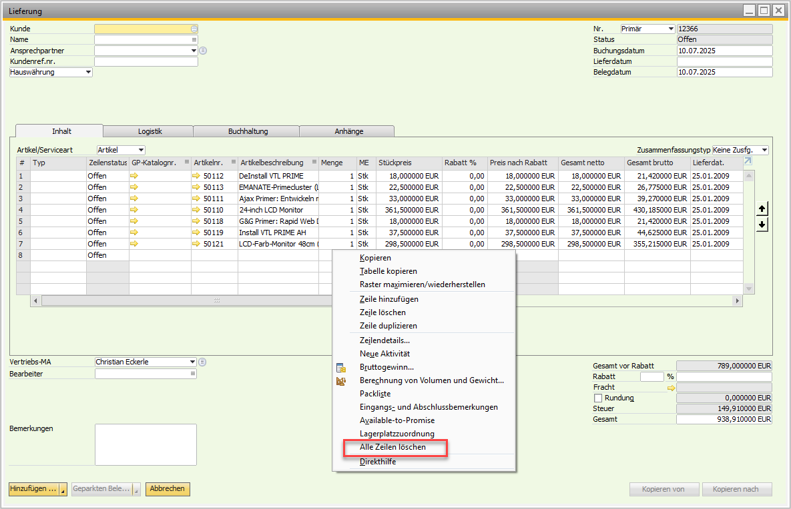

Toolbox
Overview
The Versino Toolbox Module is a collection of practical helper tools that extend the standard functionality of SAP Business One. The main function is the fast deletion of all rows in matrix views, which significantly facilitates daily work.
The module works fully automatically in the background and requires no configuration. It dynamically extends the context menus (right-click) in all relevant forms.
Main Features
The core function of the module is the extension of the context menu in matrices with the entry "Delete all rows".
- Automatic detection: The tool automatically detects all forms with matrices and adds the function.
- Universal compatibility: The function works with all SAP standard forms that contain matrices — and also with user-defined forms.
- Safe delete algorithm: The module uses exclusively standard SAP delete functions and respects all permissions. It does not perform direct data manipulation.
- Multilingual: The menu entries automatically follow the SAP B1 UI language setting.
Supported Form Types
The "Delete all rows" function works with all SAP Business One forms that contain matrix objects:
Sales Documents
- Quotations
- Sales orders
- Deliveries
- Invoices
Purchasing Documents
- Purchase orders
- Goods receipts
- Invoices
Other Forms
- Journal entries
- Master data forms
- Inventory transactions
- User-defined forms
How the Delete Logic Works
For technically interested users — a look behind the scenes. The module uses a smart, safe algorithm:
- The system determines the number of visible rows.
- It identifies the first editable cell per row.
- It clicks on this cell and calls the SAP standard delete function (either "Delete row" or "Remove", depending on availability).
- The process is repeated for all further rows.
- After completion, temporary event handlers are removed again — no permanent menu changes.
Why this matters: Some rows cannot be deleted due to SAP standard logic (e.g. because of open document links). This is not a module bug, but standard SAP behavior.
Application
Usage is extremely easy and tremendously speeds up document corrections:
- Open any document that contains positions in a table (e.g. a delivery).
- Click with the right mouse button in the area of the table.
- Select the option "Delete all rows" in the context menu.
- All rows are immediately removed and a success message appears in the status bar: "Delete all rows: Completed".
Caution: Action cannot be undone
Deleting the rows is final and cannot be restored via an "Undo" function. Make sure you really want to remove the rows.

Tips and Troubleshooting
Practical Use Cases
- Correction of incorrect entries: If you started a wrong document, you can remove all rows with one click and start over.
- Cleaning up copied documents: When copying documents you can quickly remove all unnecessary positions.
- Template editing: Use the function for reusable document templates to quickly prepare them for new data.
- Testing and development: Ideal for quickly resetting forms in test environments.
Common Problems and Solutions
Problem: The menu item "Delete all rows" does not appear.
Solution: Make sure you right-click directly into an editable matrix. In forms without matrices or in non-editable views, the function is not available.
Problem: An error occurs during deletion.
Solution: Check whether you have basic editing rights for the opened form in SAP Business One.
Problem: Function does not delete all rows.
Solution: This is normal — the system uses SAP standard functions that may not work for certain rows (e.g. with open links). These rows can only be removed manually under consideration of the SAP business logic.
Problem: Matrix does not respond / freezes.
Solution: The system works with form locking (Freeze/Unfreeze) — wait briefly until the operation is completed.